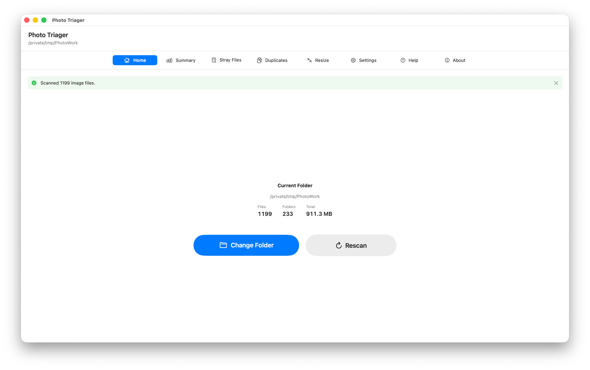
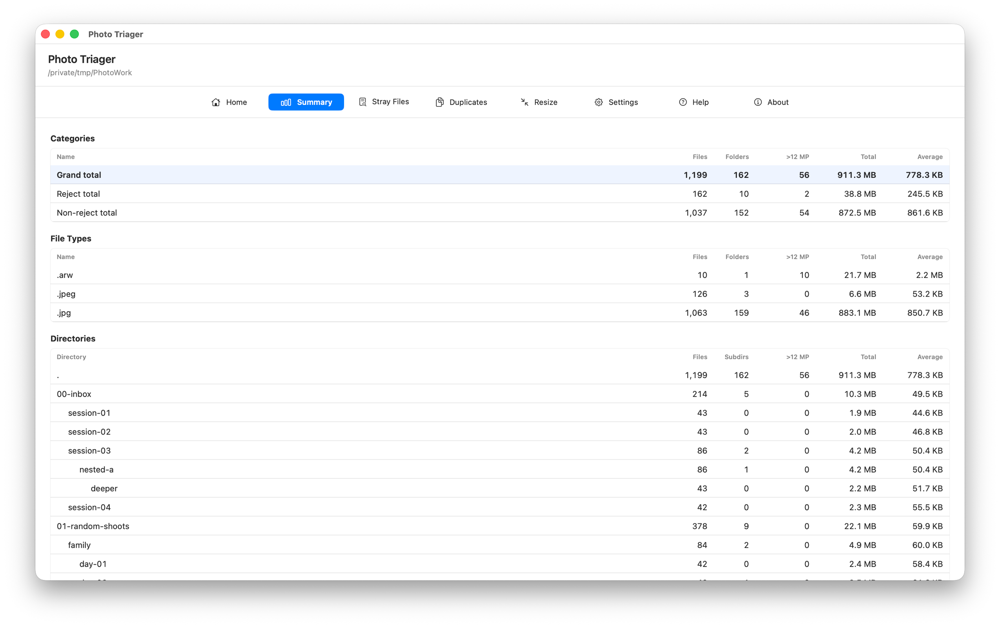
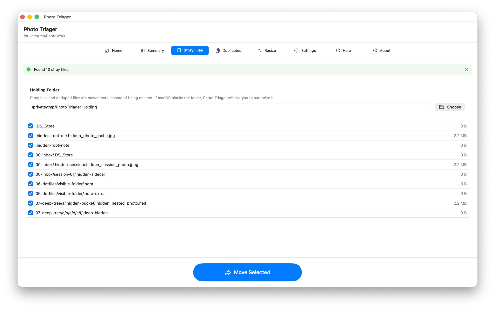
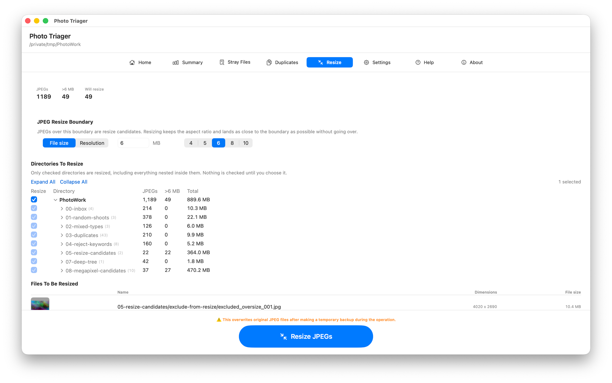
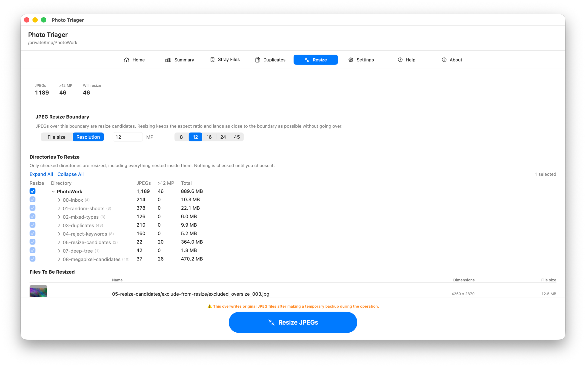

Photo Triager
Clean up photo folders before editing, delivery, or archiving.
Requires macOS 14 or later.
Photo Triager is a Mac app for reviewing messy photo folders before you start changing them. It scans nested directories, counts image types, separates reject folders, finds exact duplicates, moves stray hidden files to a holding folder, and resizes oversized JPG/JPEG files by file size or by resolution, with visible progress and summaries.
It is not a photo editor, a catalog, or a Lightroom replacement. It is a practical preflight tool for the part of photo work where you need to understand what is in a folder before cleanup becomes risky.
Download

Support
Have a question, found a bug, or need help understanding a workflow? Reach out. We read every message.
Before you write
- Counts look different from Finder? Check Settings. Photo Triager only counts the image extensions selected there.
- Reject folders are missing? Add the folder word to Reject Folder Keywords, then rescan.
- Files cannot be moved? macOS may require folder permission. Use the permission button for the holding folder when prompted.
- Before resizing JPEGs: Make a backup and review which directories you have ticked. JPEG resize overwrites originals.
Manual





Home
Choose a photo folder, change to another folder, or rescan after files have changed outside the app. Photo Triager scans recursively, including nested subfolders.
Summary
Review the folder before changing anything. The Summary tab shows image counts, file types, directory counts, reject totals, non-reject totals, grand totals, and oversized JPEG candidates.
Stray Files
Find hidden dot-prefixed files and move selected items to the holding folder. Photo Triager moves these files instead of deleting them, so you can inspect them later.
Duplicates
Find exact byte-for-byte duplicates. Choose one keeper in each duplicate group, preview the image where possible, then dedupe the extra copies to the holding folder.
Resize
Resize JPG/JPEG files that exceed a boundary you set. The boundary can be a file size in MB, or a resolution in megapixels — for example 12 MP, which brings a 24 MP camera file down to roughly half its pixel count. Resolution resizing keeps the aspect ratio and lands as close under the target as the shape of the image allows, so a 3:2 photo stays 3:2 and a panorama stays a panorama.
Nothing is resized until you choose it. The directory list starts with nothing ticked and the run button disabled; tick a folder and everything nested inside it is included, so the whole tree is one click and a single shoot is another. Files are processed in path order, and the run ends with a summary of every file that changed.
Rewritten files are encoded at high quality rather than maximum. A camera JPEG has already been compressed, so re-saving it at maximum quality inflates the file without recovering any detail that was lost when the camera wrote it.
Settings
- Language: switch the app between English and Japanese.
- Included file types: choose which image extensions appear in scans, counts, duplicate detection, and summaries.
- Reject folder keywords: count folders such as reject, rejected, ぼつ, ボツ, and 没 separately from normal folders.
- Holding folder: choose where stray files and deduped files are moved.
- JPEG resize boundary: set a file size in MB or a resolution in megapixels, above which JPG/JPEG files become resize candidates.
File Safety Notice
Photo Triager performs file operations on folders you choose, including moving files and overwriting original JPEG files during resize. Hoshino Software does not warrant that files, metadata, directory structure, resized output, or intermediate work will be preserved, recoverable, uninterrupted, error-free, or free from loss or corruption. Keep an independent backup and use the app only on copies or files you are prepared to modify.
Legal
Privacy Policy
Last Updated: June 2026
Information We Do Not Collect
Photo Triager does not collect, store, use, share, sell, or transfer personal data. The app is designed to work locally on your Mac. It does not use analytics, advertising networks, tracking SDKs, or Hoshino Software servers.
Files and Folders
Photo Triager can access folders only when you choose them or grant permission through macOS. File paths, image contents, metadata, duplicate information, resize results, and settings remain on your device unless you choose to send information to support by email.
Support Email
If you contact support, your email app may include app version and settings details in the message body to help diagnose the issue. Sending that email is your choice.
Third-Party Services
Photo Triager does not integrate with third-party analytics, advertising, or tracking services.
Changes to This Policy
We may update this Privacy Policy from time to time. Changes are effective when posted on this page.
Contact Us
If you have questions about this Privacy Policy, contact support [at] hoshinosoftware [dot] com.